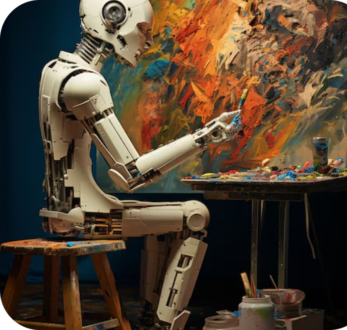
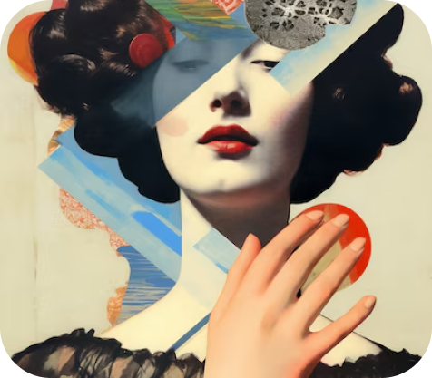

Искусство
На сегодняшний день художник сам выбирает в каком направлении творить, но популярное направление все-таки есть. С переходом к цифровому формату многие творят в минимализме, делая все легко понимаемым. Что бы не тратиться на материалы, используют программы для digital art.